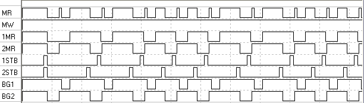

Используя присутствующую в программе модель арбитра (модуль extra.dll), можно создать систему, в которой присутствует два процессора Intel 8080, разделяющих одну общую шину для доступа к памяти. В отличие от простой системы с одним активным устройством на шине (процессором), здесь ситуация осложняется тем, что нужно разделить время обращений к шине от активных устройств, чтобы они друг другу не мешали. Одного арбитра для этого недостаточно, т.к. он только вырабатывает сигналы разрешения доступа, но не производит никаких действий по отключению шин активных устройств от системной шины. Кроме того, требуется схема выработки управляющих сигналов для памяти и регистров портов ввода/вывода, если они есть.
В собранной схеме присутствуют следующие элементы:
Временные диаграммы работы здесь следующие:
Первые два канала осциллографа показывают состояние входов памяти RD и WR. Т.к. записи в память у нас нет, сигналы запроса доступа в шине будут совпадать с сигналами MR, приходящими от системных контроллеров (следующие два канала). Еще два канала показывают состояние сигналов ST.STB, т.е. фактически положение во времени циклов команд. Наконец, последние два канала – состояние выходов разрешения арбитра.
Видно, что при первой попытке чтения памяти оба процессора выставили запрос одновременно. Арбитр выбрал запрос второго процессора и выставил на BG2 сигнал низкого уровня. В это время вход READY процессора 1 неактивен, поэтому процессор ждет, пока ему не предоставят доступ к шине. Второй процессор в это время производит чтение из памяти. Наконец, доступ предоставляется первому процессору.
В дальнейшем задержки уже не наблюдаются, т.к. выполненные первым процессором такты ожидания привели к «разности фаз» исполнения команд, поэтому в дальнейшем запросы не перекрывались во времени. Поэтому в течение последующей работы процессоры выполняли свои программы действительно одновременно. Т.е. шина памяти здесь не является узким местом, в отличие от реальных систем, где требования процессоров намного выше возможности памяти (что приводит к необходимости использования кэш-памяти процессоров).